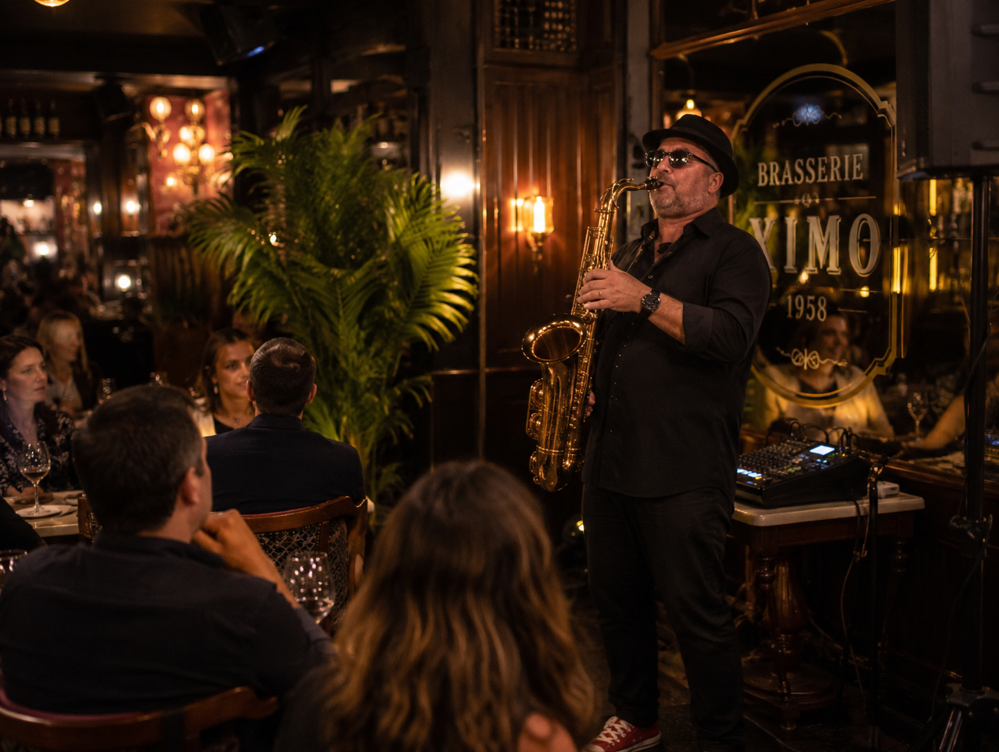
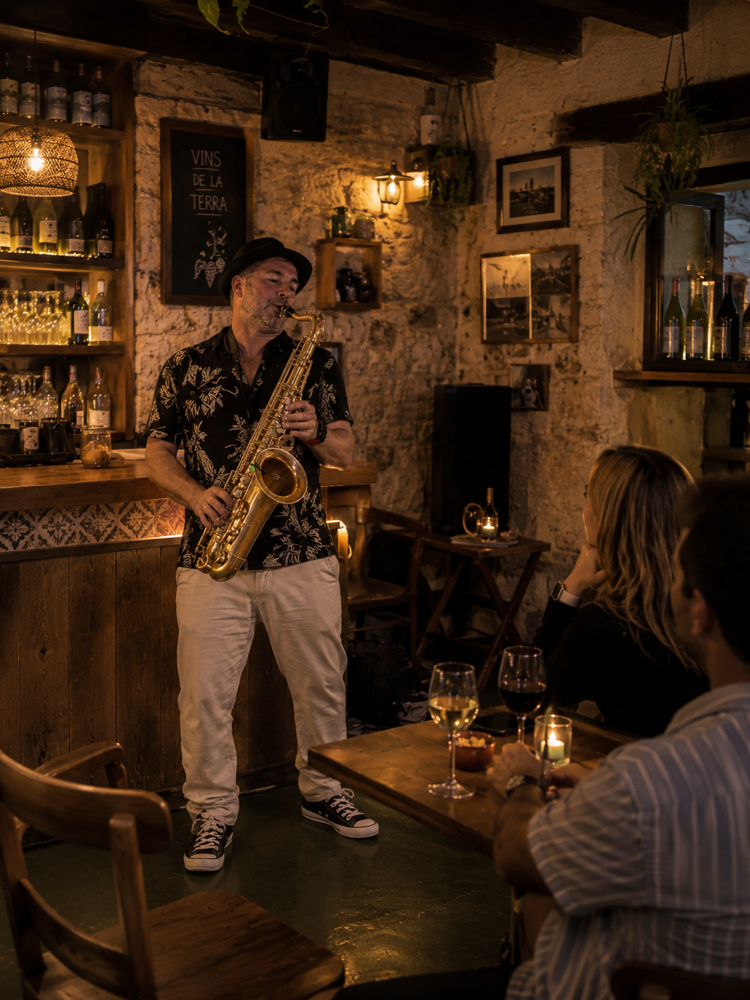

Un formato versátil para eventos en Palma
Palma concentra bodas urbanas, eventos de empresa, hoteles, restaurantes, terrazas y celebraciones privadas con necesidades muy diferentes. El saxo se adapta bien a esa variedad porque puede moverse entre un ambiente lounge, un repertorio más emocional o una intervención bailable.
La actuación se plantea para acompañar la experiencia del evento con naturalidad: sonido cuidado, repertorio flexible y una puesta en escena sobria que encaja tanto en espacios elegantes como en celebraciones más distendidas.
Opciones habituales
- Cócteles, cenas privadas y eventos corporativos.
- Bodas, celebraciones familiares y momentos especiales.
- Hoteles, terrazas, rooftops y espacios gastronómicos.
- Sets con DJ para transiciones hacia la fiesta.
Fotos
Música en directo para espacios de Palma.


También